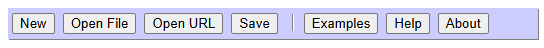

Creates a fresh instance of Logan BASIC in a new browser tab.
Prompts for and opens a .BAS file from the device's local file storage.
Prompts for and opens a .BAS file from a URL on the internet.
Saves the current program code to a .BAS file on the device's local file storage.
Opens a new browser tab with a list of example programs that demonstrate some of the features and capabilities of Logan BASIC.
Opens a new browser tab with a list of topics covering all the features available in Logan BASIC.
Opens a new browser tab with information on the current version of Logan BASIC.